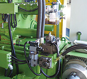

一體式射出C型結構
獨特設計的前機壁與C型架為一體鑄造成型，可確保射出中心的一致性，更可徹底發揮優異的射出性能。

自動大柱抽取裝置 (選配)
於具有油壓中子之模具，提供裝缷之方便性。上側之大柱可抽離前機壁。照片所示為操作側上方大柱之抽取裝置

液壓系統
具節能省電特性。總壓控制採用無段式比例閥。裝先進伺服-液壓結合液壓系統精準地對機器作動流量與壓力，提供必須動力，省電力20%

安全門
當安全門打開時立刻停止動作，以確保人員之安全。各部位安全包覆，減少對機器污染並降低機器故障率。

自動注油器
機器各部曲手活動點，都施以高壓黃油潤滑。注油壓力高達50 kg/cm²以上，無潤滑不足之慮 (黃油番號0.00)
自潤型銅套
全系列機種之曲手使用自潤型銅套。除了可確保長久精度，而且可減少潤滑油之注油頻率。既經濟又環保
高剛性曲手機構
特殊設計的曲手機構，機板厚度加厚，除了大幅增加鎖模時之剛性與穩定性。而且確保機壁面的平行精度

活塞形蓄壓器
可積蓄壓力高達210kg/cm²，並且直接作高壓輸出，縮短增壓建壓時間，使鑄品密緻度高，維修成本低，油壓油雜質容忍度高
機體結構
C型架與前機壁為一體成型，確保射出中心的一致性
經過加厚設計之模板可提升鎖模穩定性及剛性，並將變形量降至最低
超大尺寸之大柱經應力消除，具有強度高、使用壽命長等特性

電器系統
軟體服務
- 三種射出模式可供選擇
- Full test 功能，實機模流分析
- 多種技術參數可同時監看
- 生產履歷記錄功能
硬體設備
- 觸控彩色屏幕，操作方便
- 壓力流量比例閥控制機械動作
- Wi-fi實現工廠訊息化及遠端監控功能
- 伺服-液壓系統有效節能

三種射出模式可供選擇：緩啟單速、多段速、等加速


實機模流分析
- 在冷室壓鑄製程中，料管屬於開放空間，熔湯流動過程中，可能捲入大量氣體而將空氣擠入模腔內，嚴重影響鑄件品質。有效選擇射出低速之臨界速度，使熔湯在料管內流動平順而無捲氣產生。
- 由於熔湯與料管壁的溫度差，熔湯倒入料管後，會在料管壁形成激冷層而呈固態，在推進的過程中形成捲氣，包氣的情形，經由模擬功能變成可視，進而調整溫度及射速，使熔湯於快射點以前，呈成無捲氣飽管狀態。
- 可使用多段速功能，模擬熔湯進入模腔內流動情形，從中觀察，做出對應解決方案。